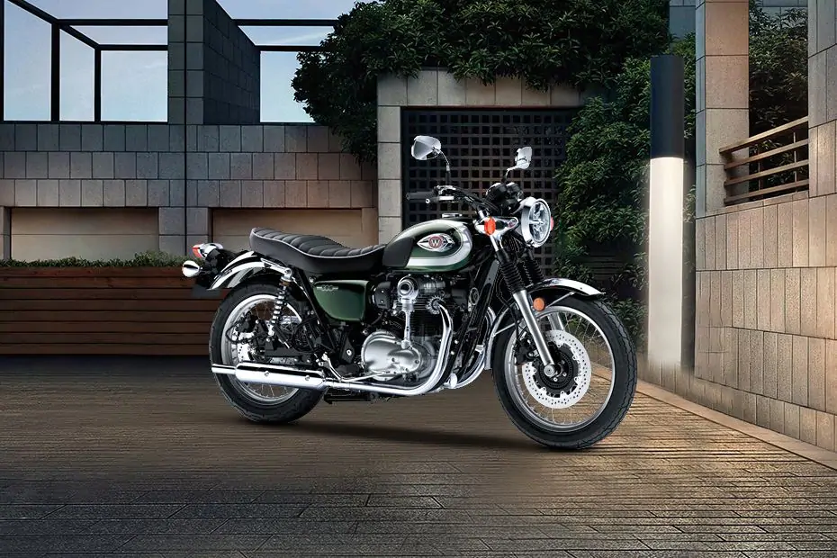
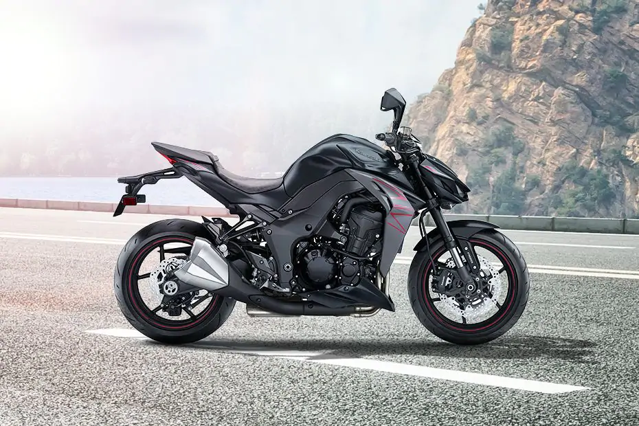

KAWASAKI NINJA H2
Price: Rp 790,000,000
The Kawasaki Ninja H2 is offered Petrol engine in the Indonesia. The new Super Sport from Kawasaki comes in a total of 4 variants. If we talk about Kawasaki Ninja H2 engine specs then the Petrol engine displacement is 998 cc.

KAWASAKI W800
Price: Rp 275,000,000
The Kawasaki W800 is offered Petrol engine in the Indonesia. The new Cruiser from Kawasaki comes in a total of 6 variants. If we talk about Kawasaki W800 engine specs then the Petrol engine displacement is 773 cc.

KAWASAKI Z1000
Price: Rp 349,000,000
The Kawasaki Z1000 is offered Petrol engine in the Indonesia. The new Super Sport from Kawasaki comes in a total of 2 variants. If we talk about Kawasaki Z1000 engine specs then the Petrol engine displacement is 1043 cc.